ภาพรวมบทนี้ Lecture 2 สอนว่า OS สลับ process ได้อย่างไร (context switch, timer interrupt) บทนี้ตอบคำถามต่อว่า "สลับแล้วจะเลือก process ไหนมารันต่อ?" ซึ่งเป็นหน้าที่ของ scheduler ตาม scheduling policy
เรียน: CPU burst / I/O burst, CPU-bound vs I/O-bound, เป้าหมายและ metric ที่ใช้วัด (turnaround, waiting, response time ฯลฯ), อัลกอริทึม FIFO, SJF, STCF, Priority, Round Robin, การคิดเรื่อง I/O, Multi-level Feedback Queue (MLFQ) และตัวอย่าง scheduler จริงใน Linux (CFS) และ Windows
บทนี้ มีโจทย์คำนวณเยอะ — ต้องวาด Gantt chart และหาค่าเฉลี่ย turnaround / response time ให้เป็น
สารบัญ
- Class Schedule
- Introduction to CPU Scheduling (CPU burst, CPU-bound vs I/O-bound, Multiprogramming)
- เมื่อไหร่ที่ OS ต้อง schedule
- Goal of Scheduling และ Scheduling Metrics
- Scheduling Algorithms: FIFO → SJF → STCF → Priority → Round Robin
- Incorporating I/O
- Multi-level Feedback Queue (MLFQ)
- Scheduler ใน OS จริง: Linux และ Windows
- คำศัพท์สำคัญ
- สรุปท้ายบท / จุดที่มักออกสอบ
0. Class Schedule (สไลด์ 2)
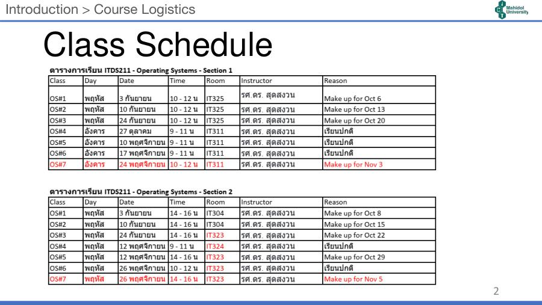
- ตารางคาบเรียนส่วน OS ของ ITDS211 (สอนโดย รศ.ดร.สุดสงวน งามสุริยโรจน์) มี 7 คาบ (OS#1–OS#7) หลายคาบเป็นคาบชดเชย (Make up)
- คาบที่เป็นตัวแดง: OS#7 — Section 1 วันอังคาร 24 พ.ย. 10–12 น. ห้อง IT311 / Section 2 วันพฤหัส 26 พ.ย. 14–16 น. ห้อง IT323
- Section 2 เปลี่ยนห้องหลายคาบเป็น IT323/IT324 (ดูตารางในรูป)
1. Introduction to CPU Scheduling
1.1 Maximizing CPU Utilization (สไลด์ 5)
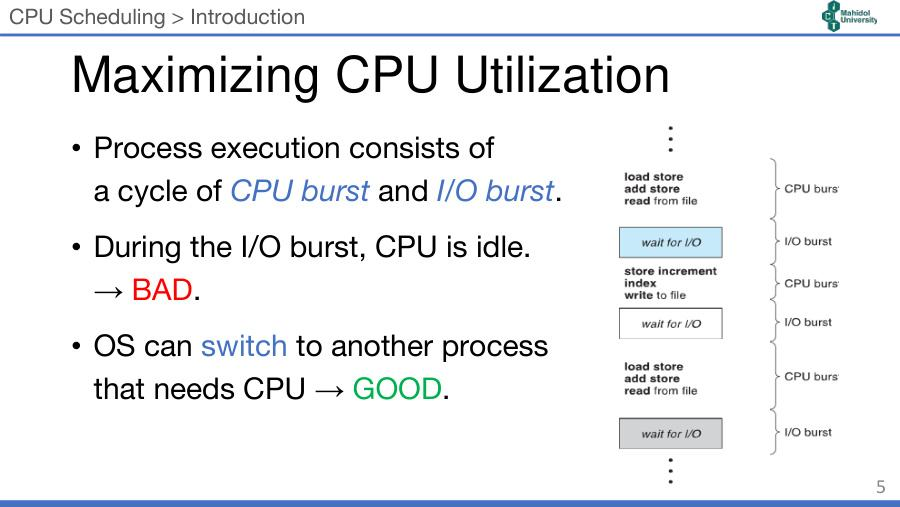
- การทำงานของ process คือ วงจรสลับกันระหว่าง CPU burst กับ I/O burst
- CPU burst = ช่วงที่ process ใช้ CPU คำนวณ (เช่น load, store, add)
- I/O burst = ช่วงที่ process รอ I/O (เช่น อ่าน/เขียนไฟล์ — "wait for I/O")
- ระหว่าง I/O burst CPU ว่างเปล่า (idle) → ไม่ดี (BAD) เพราะเสียเวลา CPU ไปเปล่า ๆ
- OS จึง สลับ (switch) ไปให้ process อื่นที่ต้องการ CPU → ดี (GOOD)
💡 เหมือนพ่อครัวที่ระหว่างรอน้ำเดือด (I/O) ก็ไปหั่นผักของอีกเมนู (process อื่น) แทนที่จะยืนรอเฉย ๆ
1.2 CPU-bound vs I/O-bound (สไลด์ 6)
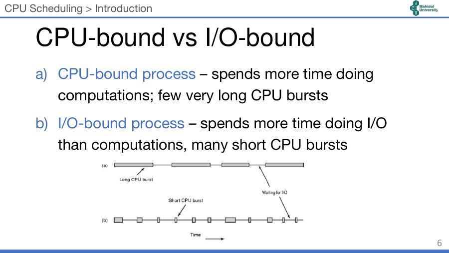
| CPU-bound process (a) | I/O-bound process (b) | |
|---|---|---|
| ใช้เวลาส่วนใหญ่กับ | การคำนวณ | การทำ I/O |
| ลักษณะ CPU burst | น้อยครั้ง แต่ยาวมาก | หลายครั้ง แต่สั้น |
| ตัวอย่าง (เสริม) | render วิดีโอ, คำนวณทางวิทยาศาสตร์ | text editor, web browser รอผู้ใช้/เครือข่าย |
1.3 Multiprogramming (สไลด์ 7)
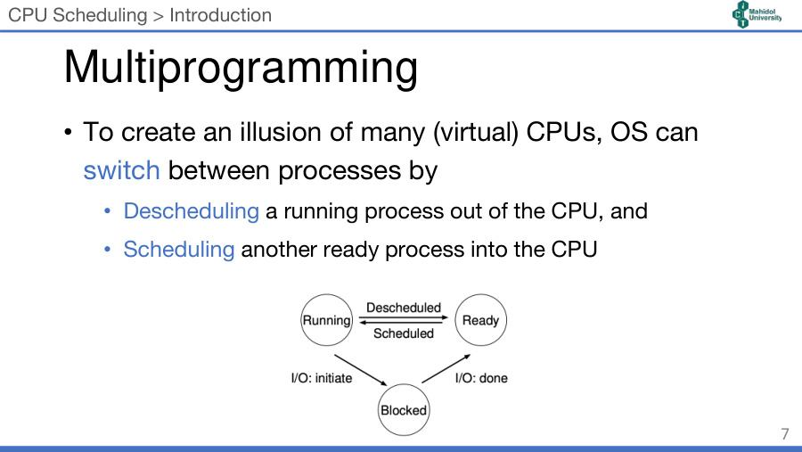
- เพื่อสร้าง ภาพลวงว่ามี CPU (เสมือน) หลายตัว OS สลับ process โดย
- Descheduling — เอา process ที่กำลังรัน ออก จาก CPU (Running → Ready)
- Scheduling — เอา process อื่นที่ พร้อม (Ready) เข้ามารันบน CPU (Ready → Running)
- (ทบทวนจาก Lecture 2) Running → Blocked เมื่อเริ่ม I/O (I/O: initiate) และ Blocked → Ready เมื่อ I/O เสร็จ (I/O: done)
2. CPU (Process) Scheduling — เมื่อไหร่ต้องตัดสินใจ? (สไลด์ 8–10)
มีหลายเหตุการณ์ที่ OS ต้องตัดสินใจว่า CPU จะรัน process ไหนต่อ:
- process yield (สละ CPU เอง)
- process ถูก block (เพราะรอ I/O)
- process สร้าง child process แล้วรอให้ child จบ (
wait()) - process จบการทำงาน (terminated)
- process ถูกขัดจังหวะด้วย timer interrupt
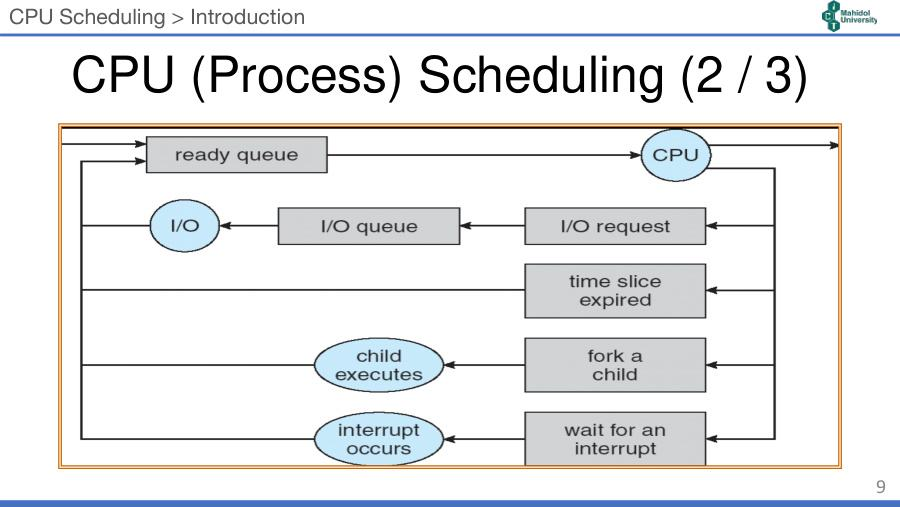
อ่านแผนภาพ (สไลด์ 9): process เข้า ready queue → ได้ CPU → ออกจาก CPU ได้ 4 ทาง แล้ววนกลับ ready queue:
| ออกจาก CPU เพราะ | ไปที่ไหนต่อ |
|---|---|
| I/O request | เข้า I/O queue → ทำ I/O → กลับ ready queue |
| time slice expired (หมดเวลา) | กลับ ready queue ทันที |
| fork a child | รอ child executes → กลับ ready queue |
| wait for an interrupt | รอ interrupt occurs → กลับ ready queue |
- ในเหตุการณ์เหล่านี้ OS ใช้ scheduling policy เลือก process ถัดไป
- คำถามที่ตามมา: (1) อัลกอริทึมพื้นฐานของ policy มีอะไรบ้าง? (2) ใช้ metric อะไรเปรียบเทียบอัลกอริทึม?
3. Goal of Scheduling และ Metrics
3.1 Goal of Scheduling (สไลด์ 11–12) — เป้าหมายขึ้นกับชนิดของระบบ
| ระบบ | เป้าหมาย | ความหมาย |
|---|---|---|
| ทุกระบบ (All systems) | Fairness | ให้แต่ละ process ได้ CPU อย่างยุติธรรม |
| Policy enforcement | ทำให้ policy ที่กำหนดถูกปฏิบัติจริง | |
| Balance | ให้ทุกส่วนของระบบ (CPU, I/O) ทำงานยุ่งตลอด | |
| Batch systems (งานประมวลผลเป็นชุด ไม่มีคนรอหน้าจอ) | Throughput | จำนวนงานที่เสร็จต่อชั่วโมง มากที่สุด |
| Turnaround time | เวลาตั้งแต่ส่งงานจนงานจบ น้อยที่สุด | |
| CPU utilization | ให้ CPU ทำงานตลอดเวลา | |
| Interactive systems (มีผู้ใช้โต้ตอบ) | Response time | ตอบสนองคำขอให้เร็ว |
| Proportionality | ตรงกับความคาดหวังของผู้ใช้ (งานง่ายควรเร็ว) | |
| Real-time systems | Meeting deadlines | ทันเส้นตาย เพื่อไม่ให้ข้อมูลสูญหาย |
| Predictability | คาดเดาได้ เพื่อไม่ให้คุณภาพลดลง (เช่น เสียง/วิดีโอกระตุก) |
3.2 Scheduling Metrics (สไลด์ 13) ⭐
| Metric | นิยาม | ยิ่ง...ยิ่งดี |
|---|---|---|
| CPU utilization | เวลาที่ CPU ทำงาน (ไม่ว่าง) | มาก |
| Throughput | จำนวน process ที่ทำเสร็จต่อหน่วยเวลา | มาก |
| Turnaround time | เวลาทั้งหมดในการทำ process หนึ่งให้เสร็จ | น้อย |
| Waiting time | เวลาที่ process รออยู่ใน ready queue | น้อย |
| Response time | เวลาตั้งแต่ส่งคำขอ จน ได้ตอบสนองครั้งแรก (ได้รันครั้งแรก) — ไม่ใช่จนได้ผลลัพธ์ทั้งหมด | น้อย |
สูตรที่ต้องจำ:
- Turnaround time = CPU time + waiting time (สไลด์) ซึ่งเท่ากับ T_completion − T_arrival (ใช้ในตัวอย่าง SJF/STCF)
- Response time = T_first run − T_arrival (สไลด์ 26)
- (เสริม) Waiting time = Turnaround time − burst time (ถ้าไม่มี I/O)
⚠️ Turnaround vs Response: turnaround นับจนงาน เสร็จ / response นับแค่จน ได้เริ่มรันครั้งแรก
3.3 Examples (สไลด์ 14)
สมมติทุก process มาถึงที่ T = 0 และรันตามลำดับ P1 → P2 → P3
- P1: waiting time = 0, turnaround time = 24 → P1 ใช้ CPU 24
- P2: waiting time = 24, turnaround time = 27 → P2 ใช้ CPU 3
- P3: waiting time = …?, turnaround time = ? (สไลด์ให้คิดเอง)
(เสริม) สไลด์ไม่ได้บอก burst ของ P3 — ถ้าใช้โจทย์มาตรฐานจากตำรา (P1=24, P2=3, P3=3): P3 waiting = 24+3 = 27, turnaround = 27+3 = 30 → average waiting = (0+24+27)/3 = 17, average turnaround = (24+27+30)/3 = 27
หลักคิด: waiting ของตัวถัดไป = turnaround ของตัวก่อนหน้า (เมื่อทุกตัวมาพร้อมกันและรันต่อกัน)
3.4 Good Scheduling Algorithms (สไลด์ 15)
อัลกอริทึมที่ดีควร:
- Max CPU utilization
- Max throughput
- Min turnaround time
- Min waiting time
- Min response time
💡 จำง่าย: 2 ตัวแรก (utilization, throughput) = "ยิ่งมากยิ่งดี" ส่วนที่ลงท้ายด้วย time ทั้งหมด = "ยิ่งน้อยยิ่งดี"
4. Scheduling Algorithms (สไลด์ 16–29)
รายการอัลกอริทึม (สไลด์ 17): FIFO, SJF, STCF, Priority, Round Robin (RR), MLFQ
4.1 First In, First Out (FIFO) (สไลด์ 18)
- เรียกอีกชื่อว่า First Come, First Served (FCFS) — ใครมาก่อนได้ก่อน
- ตัวอย่าง: A, B, C มาถึงที่ T=0 ใช้เวลาคนละ 10s
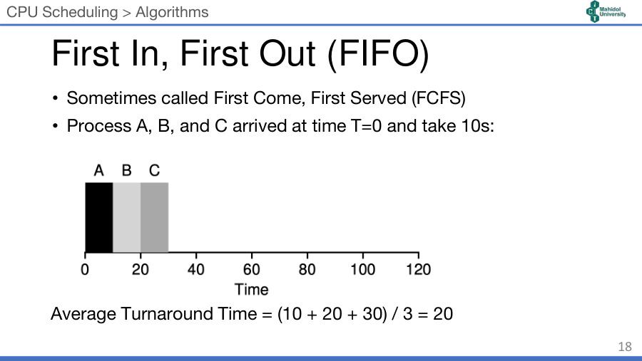
| Process | เสร็จที่ | Turnaround |
|---|---|---|
| A | 10 | 10 |
| B | 20 | 20 |
| C | 30 | 30 |
Average Turnaround Time = (10 + 20 + 30) / 3 = 20
4.2 ทำไม FIFO ไม่ดี — Convoy Effect (สไลด์ 19)
- ถ้า A ใช้ 100s แต่ B, C ใช้แค่ 10s และ A มาก่อน
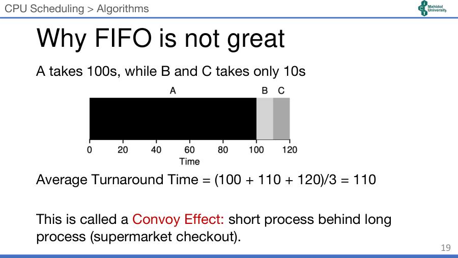
Average Turnaround Time = (100 + 110 + 120) / 3 = 110 (แย่ลงมาก)
- เรียกว่า Convoy Effect: process สั้นติดอยู่หลัง process ยาว เหมือนต่อแถวจ่ายเงินในซูเปอร์มาร์เก็ต แล้วคนหน้าเข็นรถเต็มคัน ขณะที่เราถือของชิ้นเดียว
4.3 Shortest Job First (SJF) (สไลด์ 20)
- เลือกงานที่สั้นที่สุดก่อน — แก้ convoy effect
- ตัวอย่างเดิม (A=100s, B=C=10s มาพร้อมกันที่ T=0) → รัน B, C, A
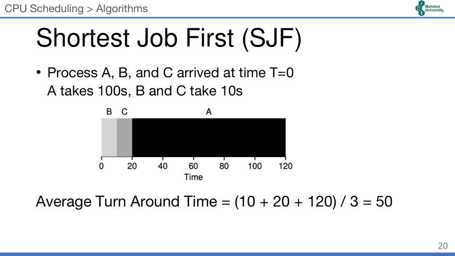
Average Turnaround Time = (10 + 20 + 120) / 3 = 50 (จาก 110 เหลือ 50)
4.4 SJF: Late Arrival (สไลด์ 21)
- ถ้า B และ C มาถึงที่ T = 10 (A มาถึง T=0 และได้ CPU ไปแล้ว)
- SJF เป็น non-preemptive → A ต้องรันจนจบ B, C ต้องรอ → convoy effect กลับมา
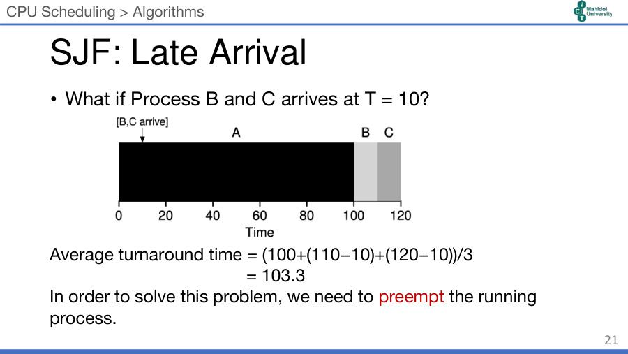
Average turnaround = (100 + (110−10) + (120−10)) / 3 = 310/3 = 103.3
- (สังเกต: turnaround = เวลาเสร็จ − เวลามาถึง จึงต้องลบ 10)
- วิธีแก้: ต้อง preempt (แย่ง CPU คืน) จาก process ที่กำลังรัน
4.5 Non-preemptive vs Preemptive (สไลด์ 22) ⭐
| Non-preemptive | Preemptive | |
|---|---|---|
| หลักการ | process ที่ได้ CPU แล้ว ถือไว้จนกว่าจะปล่อยเอง — จบ (terminate) หรือเข้าสู่ waiting state | process ที่กำลังรัน ถูกแย่ง CPU ได้ โดย process อื่น หรือเหตุการณ์ เช่น clock (timer) หรือ มี process priority สูงกว่าเข้ามา |
| อัลกอริทึม | FIFO, SJF | STCF, RR (Priority ทำได้ทั้งสองแบบ — เสริม) |
💡 Non-preemptive = ได้คิวแล้วไม่มีใครแซง / Preemptive = มีคนแซงคิวได้ถ้ามีสิทธิ์กว่า
4.6 Shortest Time-to-Completion First (STCF) (สไลด์ 23)
- = SJF แบบ preemptive (ตำราอื่นเรียก SRTF — Shortest Remaining Time First, เสริม)
- ทุกครั้งที่มี process ใหม่เข้ามา → เลือกตัวที่ เหลือเวลาน้อยที่สุด
- ตัวอย่าง: A (100s) มาที่ 0; B, C (10s) มาที่ 10 → ที่ T=10 A เหลือ 90 แต่ B เหลือ 10 → แย่ง CPU ให้ B แล้วต่อด้วย C แล้ว A ค่อยรันต่อ
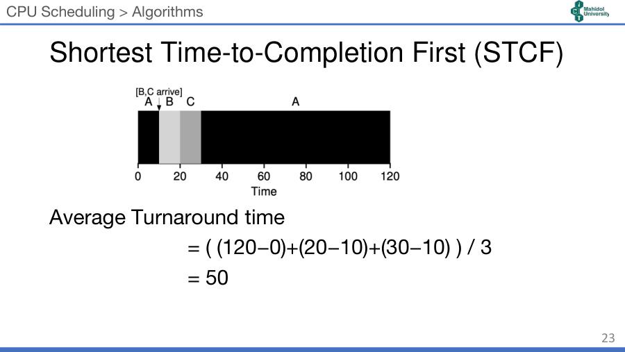
| Process | มาถึง | เสร็จ | Turnaround |
|---|---|---|---|
| A | 0 | 120 | 120 |
| B | 10 | 20 | 10 |
| C | 10 | 30 | 20 |
Average Turnaround = ((120−0) + (20−10) + (30−10)) / 3 = 150/3 = 50 (จาก 103.3 เหลือ 50)
4.7 Priority (สไลด์ 24–25)
- แทนที่จะดูจาก burst time ให้ใช้ priority (ลำดับความสำคัญ) ของ process
- ตัวเลขน้อย = priority สูง
- ปัญหา: starvation (อดตาย) — process priority ต่ำอาจไม่ได้รันเลย ถ้ามีงาน priority สูงเข้ามาเรื่อย ๆ
แบบฝึก (สไลด์ 25): ทุก process มาที่ T=0
| Process | Burst Time | Priority |
|---|---|---|
| P1 | 10 | 3 |
| P2 | 1 | 1 |
| P3 | 2 | 4 |
| P4 | 1 | 5 |
| P5 | 5 | 2 |
Average Turnaround time = …?
(เฉลย — ทำเอง) เรียงตาม priority 1→5: P2 → P5 → P1 → P3 → P4
ลำดับ P2 P5 P1 P3 P4 ช่วงเวลา 0–1 1–6 6–16 16–18 18–19 Turnaround 1 6 16 18 19 Waiting 0 1 6 16 18 Average turnaround = (1+6+16+18+19)/5 = 60/5 = 12 / Average waiting = 41/5 = 8.2
4.8 Round Robin (RR) (สไลด์ 26)
- รันงานหนึ่งเป็นเวลา 1 time slice (เรียกว่า scheduling quantum, q) แล้ว สลับไปงานถัดไป วนเป็นวงกลม
- ผลของขนาด q:
- q ใหญ่เกินไป ⇒ กลายเป็น FIFO (งานจบก่อนหมด q ทุกครั้ง)
- q เล็กเกินไป ⇒ overhead จาก context switch สูง
- ดีต่อ response time — Response time = Time first run − Time arrived
- แย่ต่อ turnaround time แต่ fairness ยอดเยี่ยม
4.9 RR: Example (สไลด์ 27) และเทียบกับ SJF (สไลด์ 28)
- A, B, C มาพร้อมกัน, q = 1s
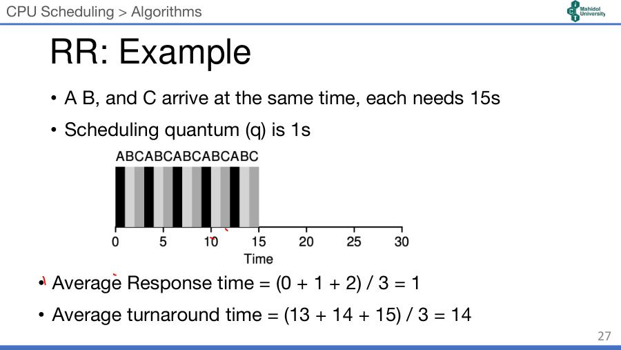
⚠️ สไลด์เขียนว่า "each needs 15s" แต่ในกราฟ แต่ละตัวใช้ 5s (รวม 15s) — ตัวเลขในการคำนวณก็ใช้ 5s ต่อตัว
| A | B | C | เฉลี่ย | |
|---|---|---|---|---|
| RR: first run | 0 | 1 | 2 | Response = (0+1+2)/3 = 1 |
| RR: เสร็จ | 13 | 14 | 15 | Turnaround = (13+14+15)/3 = 14 |
| SJF: first run | 0 | 5 | 10 | Response = (0+5+10)/3 = 5 |
| SJF: เสร็จ | 5 | 10 | 15 | Turnaround = (5+10+15)/3 = 10 |
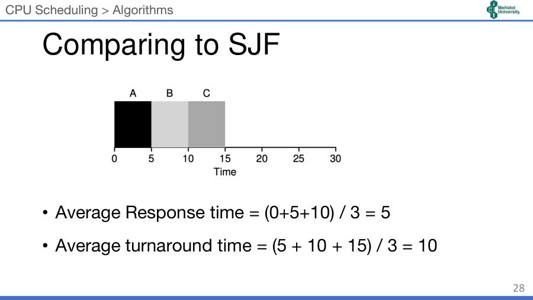
💡 Trade-off สำคัญ: RR ชนะด้าน response time (1 vs 5) / SJF ชนะด้าน turnaround time (10 vs 14) — ไม่มีอัลกอริทึมไหนดีที่สุดทุก metric
4.10 Context Switching Overhead (สไลด์ 29)
- q ควรใหญ่กว่าเวลาที่ใช้ context switch มาก ๆ
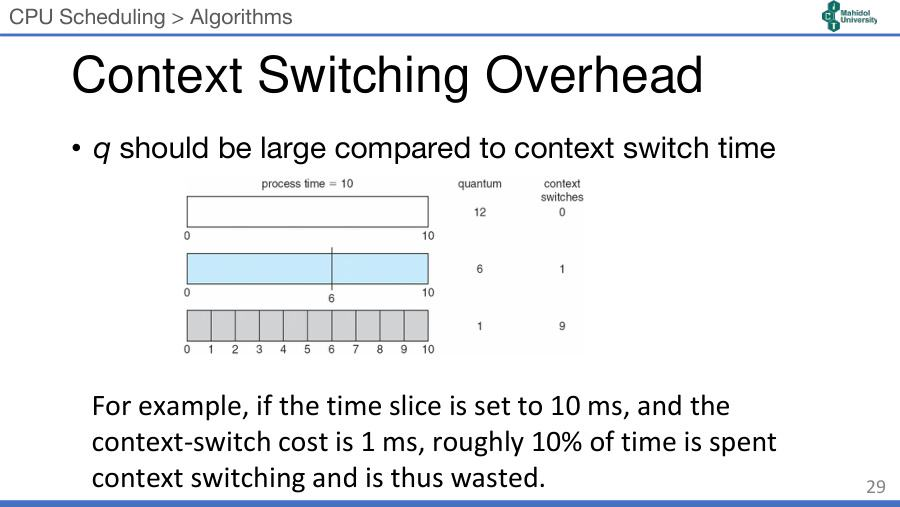
| process time = 10, quantum | จำนวน context switch |
|---|---|
| 12 | 0 |
| 6 | 1 |
| 1 | 9 |
- ตัวอย่าง: time slice = 10 ms, context switch = 1 ms → เสียเวลาไปกับการสลับประมาณ 10% (เวลาที่สูญเปล่า)
5. Incorporating I/O (สไลด์ 30–33)
5.1 แนวคิด (สไลด์ 31)
- เมื่อ process ถูก block (รอ I/O) → scheduler เลือก process อื่นมารัน ได้
- เมื่อ I/O เสร็จ → scheduler อาจตัดสินใจให้ process ที่ขอ I/O นั้น รันทันที
- แนวคิดคือ ทับซ้อน (overlap) การทำงานของ CPU กับ I/O ให้เกิดขึ้นพร้อมกัน
5.2 Bad Example: ไม่ทับซ้อน (สไลด์ 32)
- A และ B มาพร้อมกัน ต้องใช้ CPU คนละ 50 (สไลด์เขียน 50s แต่กราฟใช้หน่วย ms)
- A: ทุก ๆ 10ms ของ CPU ต้องใช้ disk (I/O) อีก 10ms / B: ใช้ CPU ล้วน
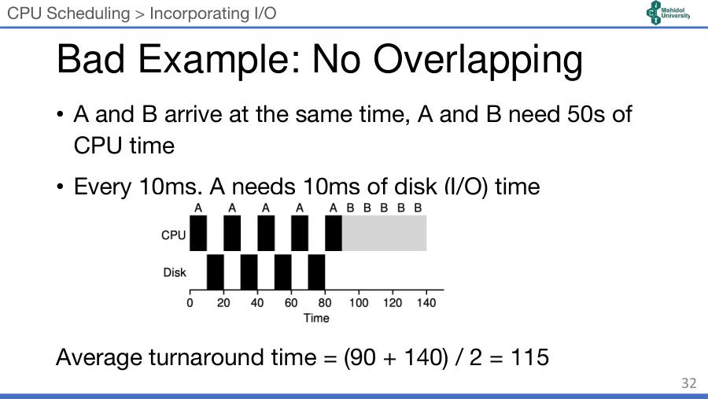
- ขณะ A รอ disk CPU ว่างเปล่า → A เสร็จที่ 90, B เริ่มที่ 90 เสร็จที่ 140
- Average turnaround = (90 + 140) / 2 = 115
5.3 STCF Example: ทับซ้อน (สไลด์ 33)
- มอง A เป็น sub-job ย่อย ๆ ละ 10ms (เวลาที่คาดว่าจะรันก่อนทำ I/O) → แต่ละ sub-job สั้นกว่า B ⇒ STCF เลือก A ก่อน
- ขณะ A ทำ I/O → B ได้รัน; เมื่อ A พร้อม (กลับจาก blocked) → B ถูก preempt ให้ A รัน
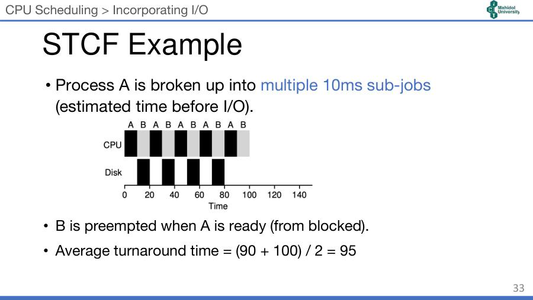
- A เสร็จที่ 90, B เสร็จที่ 100 → Average turnaround = (90 + 100) / 2 = 95 (ดีกว่า 115)
💡 ข้อคิด: มอง CPU burst แต่ละช่วงของ process I/O-bound เป็น "งานสั้น" → ได้ priority สูงเสมอ → ระบบตอบสนองดีและ CPU ไม่ว่าง
6. Multi-level Feedback Queue (MLFQ) (สไลด์ 34–42)
6.1 Motivation (สไลด์ 35)
- SJF/STCF ดีที่สุดสำหรับ turnaround time → แต่ OS มักไม่รู้ว่างานจะใช้เวลาเท่าไร!
- RR ดีที่สุดสำหรับ response time → แต่ แย่มากเรื่อง turnaround time
- โจทย์: สร้าง scheduler ที่
- ลด response time ให้ interactive process
- ลด turnaround time โดย ไม่ต้องรู้ความยาวงานล่วงหน้า
6.2 แนวคิดพื้นฐาน (สไลด์ 36)
- MLFQ เป็นอัลกอริทึมที่มีชื่อเสียง โดย Corbato et al.
- มี หลายคิว แต่ละคิว priority ต่างกัน
- แต่ละคิวใช้ RR ภายในคิว
- process เริ่มที่ priority สูงสุด และ ถูกลดลงมาเรื่อย ๆ เมื่อใช้ time slice หมด
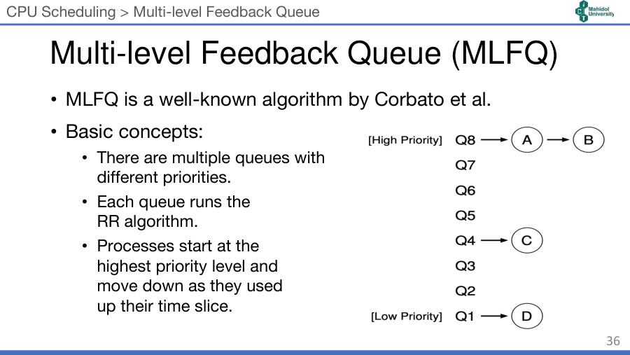
- ในรูป: A, B อยู่คิวบนสุด (Q8) → ได้รันสลับกันแบบ RR, C (Q4) และ D (Q1) ต้องรอจนคิวบนว่าง
💡 "Feedback" = ใช้ พฤติกรรมที่ผ่านมา ของ process มาปรับ priority — งานไหนกิน CPU นานก็ถูกลดชั้น งานไหนปล่อย CPU เร็ว (interactive) ก็อยู่ชั้นบน
6.3 MLFQ Rules (สไลด์ 37) ⭐ ต้องจำทั้ง 5 ข้อ
| Rule | เนื้อหา | ทำไม |
|---|---|---|
| 1 | ถ้า Priority(A) > Priority(B) → A รัน (B ไม่รัน) | คิวบนได้ก่อนเสมอ |
| 2 | ถ้า Priority(A) = Priority(B) → A กับ B รันแบบ RR ด้วย time slice ของคิวนั้น | คิวเดียวกันแบ่งกันยุติธรรม |
| 3 | งานใหม่เข้าระบบ → วางที่ priority สูงสุด (คิวบนสุด) | สมมติไว้ก่อนว่าเป็นงานสั้น |
| 4 | เมื่องานใช้ time allotment ของชั้นนั้นหมด (ไม่ว่าจะเคยปล่อย CPU กี่ครั้ง) → ลด priority ลง 1 คิว | ป้องกันการโกง (gaming) |
| 5 | ทุก ๆ ช่วงเวลา S → ย้ายทุกงานกลับขึ้นคิวบนสุด (priority boost) | ป้องกัน starvation + ปรับตามพฤติกรรมที่เปลี่ยน |
6.4 MLFQ Simple Example (สไลด์ 38)
- ดำ: งานยาว / เทา: งานสั้น มาถึงที่ T = 100
- สมมติว่า งานใหม่ทุกงานเป็นงานสั้น (priority สูงสุด)
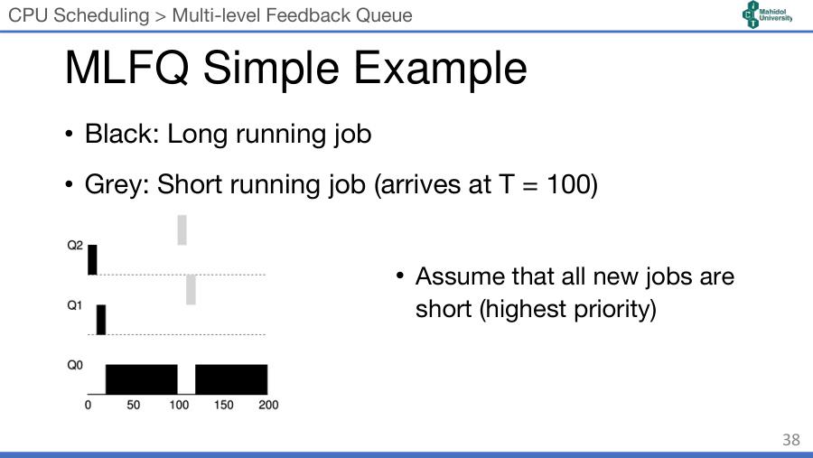
- งานยาว (ดำ) เริ่มที่ Q2 → ใช้ slice หมดตกไป Q1 → ตกไป Q0 แล้วรันยาว
- ที่ T=100 งานสั้น (เทา) เข้ามาที่ Q2 → แย่ง CPU ได้ทันที (Rule 1) → ลงมา Q1 แล้วก็เสร็จก่อนถึง Q0 → งานยาวรันต่อ
- ผลคือ MLFQ ประมาณ SJF ได้โดยไม่ต้องรู้ความยาวงาน: ถ้าเป็นงานสั้นจะเสร็จเร็ว ถ้ายาวก็ค่อย ๆ ลงไปคิวล่าง
6.5 MLFQ Intensive I/O Example (สไลด์ 39)
- ดำ: งานยาว / เทา: งาน interactive (ทำ I/O ถี่มาก)
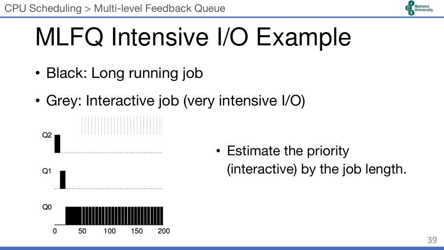
- งาน interactive ใช้ CPU แป๊บเดียวแล้วก็ปล่อยไปทำ I/O → ไม่ใช้ slice หมด → อยู่ priority สูงตลอด → response ดี
- ประมาณ priority (ความเป็น interactive) จากความยาวของงาน (burst)
6.6 MLFQ Accounting — Rule 4 (สไลด์ 40)
- ทุก process มีเวลาจำกัด (fixed amount) ในแต่ละคิว (ยกเว้นคิวล่างสุด)
- เพื่อ ป้องกันการโกง scheduler (gaming)
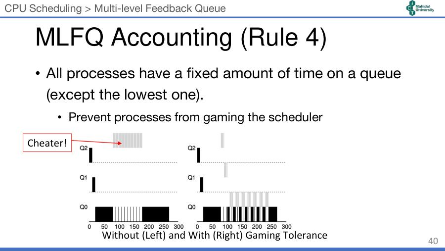
- ซ้าย (ไม่มี accounting): process เจ้าเล่ห์ (Cheater!) ทำ I/O ก่อนหมด slice นิดเดียว → ไม่ถูกลดคิว → ครอบครอง CPU อยู่ Q2 ตลอด งานยาวแทบไม่ได้รัน
- ขวา (มี accounting): นับเวลาที่ใช้ สะสม ในคิวนั้น — ครบ allotment เมื่อไหร่ก็ถูกลดคิว แม้จะปล่อย CPU บ่อย → cheater ตกลงมา Q1, Q0 และแบ่ง CPU กับงานยาวอย่างยุติธรรม
6.7 MLFQ Priority Boost — Rule 5 (สไลด์ 41)
- รีเซ็ต priority ของทุก process เป็นระยะ ๆ
- ป้องกัน starvation — งานยาวที่ตกไปคิวล่าง จะได้กลับขึ้นมารันบ้าง
- ประมาณได้ดีขึ้น เมื่อ process เปลี่ยนพฤติกรรม (เช่น เคยเป็น CPU-bound แล้วกลายเป็น interactive)
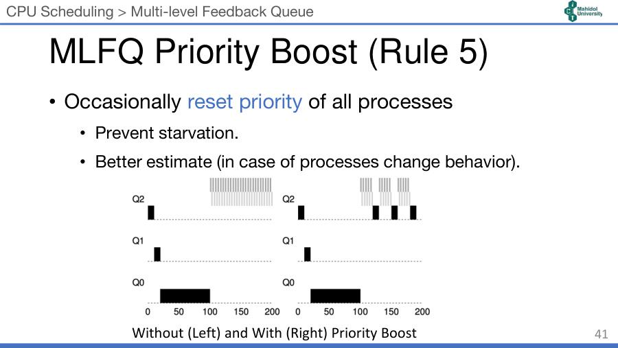
- ซ้าย: เมื่องาน interactive 2 ตัวเข้ามาใน Q2 งานยาว (ดำ) ใน Q0 ไม่ได้รันเลย (starve)
- ขวา: ทุก ๆ ช่วงเวลา งานยาวถูก boost ขึ้น Q2 → ได้รันเป็นระยะ
6.8 Example of a different Configuration (สไลด์ 42)
3 คิว:
- Q0 — RR, quantum 8 ms
- Q1 — RR, quantum 16 ms
- Q2 — FCFS
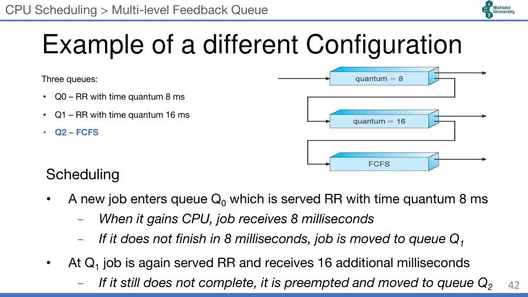
การ schedule:
- งานใหม่เข้า Q0 (RR q=8ms) → ได้ CPU 8 ms
- ถ้า ไม่เสร็จใน 8 ms → ย้ายลง Q1
- ที่ Q1 ได้ RR อีก 16 ms (เพิ่มเติม)
- ถ้ายัง ไม่เสร็จอีก → ถูก preempt และย้ายลง Q2 (FCFS)
💡 (เสริม) งานที่ใช้ CPU ≤ 8 ms จะเสร็จใน Q0 (เร็วสุด), ≤ 24 ms (8+16) เสร็จใน Q1, ยาวกว่านั้นไปรันแบบ FCFS ที่ Q2 ตอนคิวบนว่าง
7. Scheduler ใน OS จริง (สไลด์ 43–48)
7.1 Linux 2.6+ (สไลด์ 44)
- มี 2 กลุ่ม policy:
- Real-time:
SCHED_FIFO,SCHED_RR - Normal:
SCHED_OTHER,SCHED_BATCH
- Real-time:
- Real-time policies ใช้ preemptive priority scheduler และมี priority สูงกว่า กลุ่ม Normal
- Normal policies ใช้ "Completely Fair Scheduler" (CFS)
7.2 Linux: CFS และ Nice values (สไลด์ 45)
- CFS เก็บ virtual runtime (vruntime) ของแต่ละ task
- CFS เลือก task ที่ virtual runtime ต่ำที่สุด มารันต่อ (ตัวที่ "ได้ CPU ไปน้อยที่สุด")
- รัน task หนึ่ง time slice แล้ว ใส่กลับเข้า runqueue
- แต่ละ task (thread) มี nice value จาก −20 (priority สูงสุด) ถึง +19 (priority ต่ำสุด)
| nice value | ความสัมพันธ์ | ผล |
|---|---|---|
| 0 | physical runtime = virtual runtime | ปกติ |
| ต่ำ (ติดลบ) | physical runtime > virtual runtime | vruntime โตช้า → ถูกเลือกบ่อย → ได้ CPU มาก |
| สูง (บวก) | physical runtime < virtual runtime | vruntime โตเร็ว → ได้ CPU น้อย |
- ใช้ Red-Black Tree (RBTree) เก็บ task เรียงตาม vruntime เพื่อประสิทธิภาพ (หาตัวน้อยสุดได้เร็ว)
💡 "nice" = ใจดีกับคนอื่น → nice สูง = ยอมให้คนอื่นก่อน = priority ต่ำ
7.3 Windows Scheduling (สไลด์ 46)
- ใช้ priority-based preemptive scheduling
- thread priority สูงสุดได้รันก่อน
- thread รันจนกว่า (1) block (2) ใช้ time slice หมด (3) ถูก preempt โดย thread priority สูงกว่า
- thread แบบ real-time preempt thread ที่ไม่ใช่ real-time ได้
- ระบบ priority 32 ระดับ (0–31):
- Variable class: 1–15
- Real-time class: 16–31
- Priority 0 = memory-management thread
- มี คิวแยกสำหรับแต่ละ priority
7.4 Windows Priority Classes (สไลด์ 47)
priority จริงของ thread = priority class ของ process (คอลัมน์) × relative priority ของ thread (แถว)
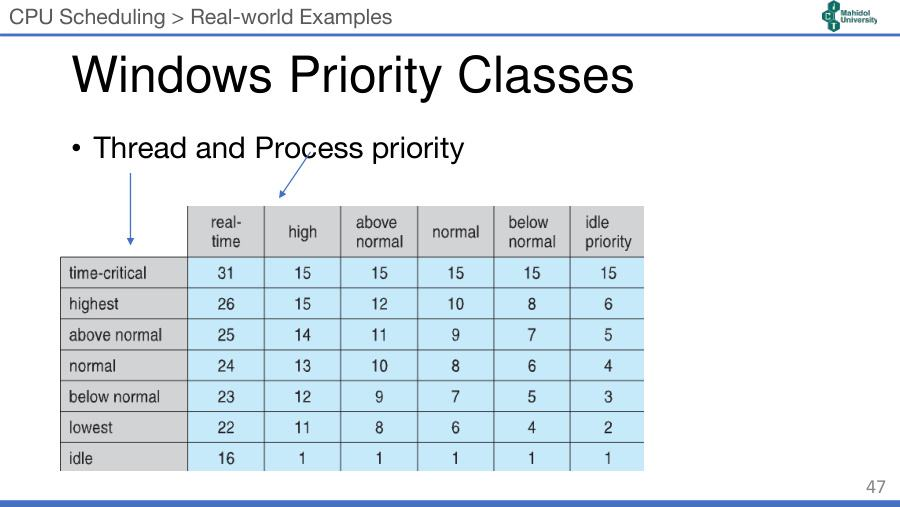
| thread \ process class | real-time | high | above normal | normal | below normal | idle priority |
|---|---|---|---|---|---|---|
| time-critical | 31 | 15 | 15 | 15 | 15 | 15 |
| highest | 26 | 15 | 12 | 10 | 8 | 6 |
| above normal | 25 | 14 | 11 | 9 | 7 | 5 |
| normal (base) | 24 | 13 | 10 | 8 | 6 | 4 |
| below normal | 23 | 12 | 9 | 7 | 5 | 3 |
| lowest | 22 | 11 | 8 | 6 | 4 | 2 |
| idle | 16 | 1 | 1 | 1 | 1 | 1 |
- สังเกต: คอลัมน์ real-time อยู่ช่วง 16–31 ส่วนคลาสอื่นอยู่ใน 1–15 (ตรงกับ variable class)
7.5 Windows: การปรับ priority แบบไดนามิก (สไลด์ 48)
- ถ้า quantum หมด → priority ถูกลด แต่ ไม่ต่ำกว่า base
- ถ้าเกิด wait (รอ I/O ฯลฯ) → priority ถูก boost ขึ้นตามสิ่งที่รอ (เช่น รอคีย์บอร์ดได้ boost มากกว่ารอ disk — เสริม)
- หน้าต่างที่อยู่ด้านหน้า (foreground window) ได้ priority boost 3 เท่า → โปรแกรมที่ผู้ใช้กำลังใช้ตอบสนองเร็ว
💡 Windows ทำคล้าย MLFQ: ใช้ CPU หมด slice → ลด priority / ไปรอ I/O → เพิ่ม priority
8. คำศัพท์สำคัญ
| คำศัพท์ | ความหมาย | จำง่าย ๆ ว่า |
|---|---|---|
| CPU burst / I/O burst | ช่วงที่ process ใช้ CPU / รอ I/O สลับกัน | คิด / รอ |
| CPU-bound | process ที่คำนวณมาก burst ยาว น้อยครั้ง | งานหนักสมอง |
| I/O-bound | process ที่ทำ I/O มาก burst สั้น ถี่ | งานรอของ |
| Scheduling / Descheduling | เอา process เข้า / ออกจาก CPU | ขึ้นเวที / ลงเวที |
| Scheduling policy | กฎที่ OS ใช้เลือก process ถัดไป | กติกาคิว |
| Turnaround time | เวลาเสร็จ − เวลามาถึง | ทั้งงาน |
| Waiting time | เวลารอใน ready queue | นั่งรอคิว |
| Response time | เวลาได้รันครั้งแรก − เวลามาถึง | ได้ตอบครั้งแรก |
| Throughput | จำนวนงานเสร็จต่อหน่วยเวลา | ผลผลิต |
| FIFO / FCFS | มาก่อนได้ก่อน (non-preemptive) | แถวธรรมดา |
| Convoy effect | งานสั้นติดหลังงานยาว | รถเข็นเต็มคันข้างหน้า |
| SJF | งานสั้นสุดก่อน (non-preemptive) | ช่องด่วน ≤ 10 ชิ้น |
| STCF | งานที่ เหลือเวลา น้อยสุดก่อน (preemptive) | SJF ที่แซงได้ |
| Preemptive | แย่ง CPU คืนจาก process ที่กำลังรันได้ | แซงคิวได้ |
| Priority scheduling | เลือกตาม priority (เลขน้อย = สูง) | บัตร VIP |
| Starvation | process priority ต่ำไม่ได้รันเลย | อดตาย |
| Round Robin (RR) | วนให้คนละ q | ผลัดกันเล่น |
| Quantum (q) / time slice | ระยะเวลาที่ได้ต่อรอบใน RR | เวลาต่อตา |
| Context switch overhead | เวลาที่เสียไปกับการสลับ process | ค่าผ่านทาง |
| MLFQ | หลายคิวหลาย priority, ปรับ priority ตามพฤติกรรม | ลดชั้นถ้ากิน CPU นาน |
| Time allotment | เวลารวมที่ process อยู่ได้ในแต่ละคิว | โควตาต่อชั้น |
| Gaming the scheduler | โกงโดยปล่อย CPU ก่อนหมด slice เพื่อคง priority | Cheater |
| Priority boost | ยก process ทั้งหมดขึ้นคิวบนเป็นระยะ | นิรโทษกรรม |
| CFS | Completely Fair Scheduler ของ Linux เลือก vruntime ต่ำสุด | ใครได้น้อยได้ก่อน |
| vruntime | virtual runtime ที่ปรับตาม nice | เวลาถ่วงน้ำหนัก |
| nice value | −20 (สูงสุด) ถึง +19 (ต่ำสุด) | nice มาก = ยอมคนอื่น |
| RBTree | Red-Black Tree โครงสร้างที่ CFS ใช้ | ต้นไม้สมดุล |
9. สรุปท้ายบท / จุดที่มักออกสอบ
- ⭐ สูตร: Turnaround = T_completion − T_arrival (= CPU time + waiting time), Response = T_first run − T_arrival
- ⭐ ตัวเลขตัวอย่างที่ควรคำนวณได้:
| สถานการณ์ | อัลกอริทึม | Avg Turnaround |
|---|---|---|
| A,B,C = 10s มาพร้อมกัน | FIFO | 20 |
| A=100, B=C=10 มาพร้อมกัน | FIFO | 110 (convoy) |
| เหมือนบน | SJF | 50 |
| A มา 0, B,C มา 10 | SJF | 103.3 |
| เหมือนบน | STCF | 50 |
| A,B,C = 5s, q=1 | RR | 14 (response 1) |
| เหมือนบน | SJF | 10 (response 5) |
| A มี I/O, B CPU ล้วน (50 ต่อตัว) | ไม่ overlap | 115 |
| เหมือนบน | STCF + overlap | 95 |
- ⭐ Non-preemptive: FIFO, SJF / Preemptive: STCF, RR
- ⭐ RR: q ใหญ่ไป → FIFO, q เล็กไป → context switch overhead สูง / ดีต่อ response + fairness แย่ต่อ turnaround
- ⭐ MLFQ 5 rules — โดยเฉพาะ Rule 4 (กันโกง) และ Rule 5 (priority boost กัน starvation)
- ⭐ Linux: Real-time (SCHED_FIFO, SCHED_RR) > Normal (SCHED_OTHER, SCHED_BATCH → CFS); nice −20 ถึง +19; vruntime ต่ำสุดได้รัน; ใช้ RBTree
- ⭐ Windows: 32 ระดับ, variable 1–15, real-time 16–31, 0 = memory-management thread; quantum หมด → ลด (ไม่ต่ำกว่า base), wait → boost, foreground ×3
คู่ที่มักสับสน:
| คู่ | ต่างกันตรงไหน |
|---|---|
| SJF vs STCF | SJF ไม่แย่ง CPU / STCF แย่งได้เมื่อมีงานที่ เหลือเวลา น้อยกว่า |
| Turnaround vs Response | จนเสร็จ vs จนได้รันครั้งแรก |
| Waiting vs Response | รวมเวลารอทั้งหมดในคิว vs รอแค่จนได้รันครั้งแรก |
| Priority: เลขน้อย vs เลขมาก | ในสไลด์ Priority: เลขน้อย = สูง / Linux nice: −20 = สูง / แต่ Windows: เลขมาก = สูง (31 สูงสุด) และ MLFQ: คิวบน = สูง |
| Starvation แก้ด้วย | MLFQ: priority boost (Rule 5) / (เสริม) Priority ทั่วไป: aging |
| Nice ต่ำ vs สูง | nice ต่ำ → physical > virtual → ได้ CPU มาก / nice สูง → ได้ CPU น้อย |